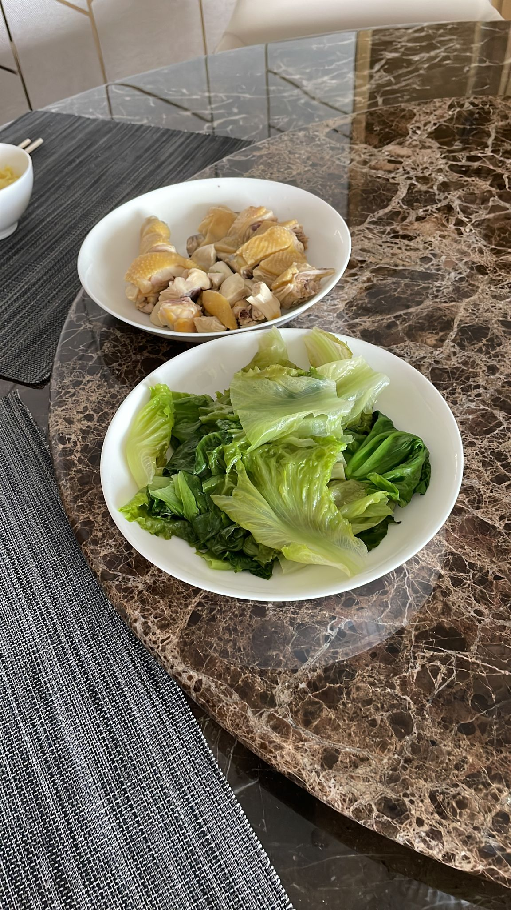

|  |
Hai Nam Chicken RiceHai Nam Chicken Rice is a dish of poached chicken and seasoned rice, served with chilli sauce and sweet soya sauce. It is considered one of the national dishes of Singapore and is most commonly associated with Singaporean cuisine, being widely available in most food courts and hawker centres around the country. |
Slice chicken and place them into serving plate. Serve with rice, chili sauce and garlic ginger sauce on the side.